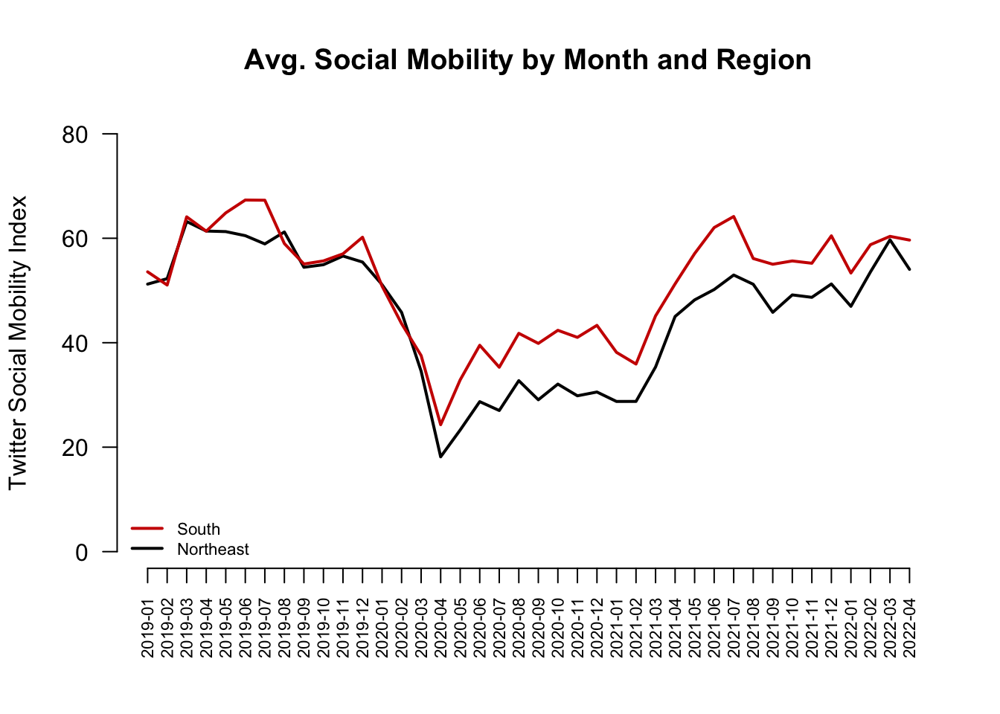

basque <- read.csv("basque.csv")5 Causality with Non-Experimental Data
In this section, we continue to evaluate causal claims, but this time we will not have the benefit of experiments.
Recall: Why do we use experiments?
We want to evaluate causal claims:
- Does manipulating one factor (a “treatment”) cause a change in an outcome? (\(Y_i(1) - Y_i(0)\))
- But we have a problem: the fundamental problem of causal inference
- (Can’t simultaneously both be treated and untreated - e.g., you can’t simultaneously be contacted and not contacted by a campaign)
- So instead, we randomly assign some units to receive a treatment, and some not to, and then compare their average outcomes in an experiment
And because of random assignment of the treatment, we can be confident that the groups are similar EXCEPT for the treatment
- Therefore, any difference between the two groups in average outcomes can be attributed to the treatment
But what if we can’t randomize the treatment?
5.1 Why can’t we always experiment?
Example: Do political leaders tend to matter for democracy?
- Our outcome: how democratic nations are
- Our causal effect of interest:
- On average, how democratic nations are with their current leaders -
- On average, how democratic nations would be with different leaders
- Possible Experimental Designs to randomly assign half of countries to receive a different political leader
- Rig elections (I.e., Election fraud- Illegal, unethical)
- Forcibly remove half from office (Probably illegal)
- Assassinations (Illegal, Immoral, Unethical, etc.)
Again, we have problems!!
5.1.1 What can we do instead?
Let’s say we want to make a causal claim about the effect of one variable on an outcome, but we can’t think of an experimental design that will help us estimate this.
What do you do?
5.2 Causal Identification Strategies
Our goal: Try to “identify” the causal effect of one variable on an outcome. As Montell Jordan once said, this is how we do it:
- Use data we have (that exist out in the world)
- Compare those who are ``treated” to a relevant comparison group who is not treated
However, we can’t randomize treatment so….
- We do our best to try to choose a good comparison (one very similar to the treatment group, but happens not to be treated)
We want to rule out all possible confounding variables and “alternative explanations” for the outcomes we observed.
5.2.1 Three Common Identification Strategies
Example: Does drinking Sprite make a person a better basketball player? (Inspired by 1990s commercial where a kid believes drinking Sprite will cause him to play basketball better.)
- Cross-section comparison: Compare Grant Hill (who drinks Sprite) to others (who don’t)
- Before-and-after: Compare Grant Hill after he started drinking Sprite to Grant Hill before
- Difference-in-differences: Compare Grant Hill before and after drinking Sprite and subtract from this the difference for some other person (who never drank Sprite) during the same two periods
(Note: “drinking Sprite” is our treatment.)
5.2.2 Threats to Cross-Section Designs
Assumption: Must assume no confounders and any alternative explanations related to differences between the treated and control subjects that also relate to the outcome. The Threat: Your two groups may differ in ways beyond the “treatment” in ways that are relevant to the outcome you care about.
- Compare Grant Hill, a tall NBA player who currently drinks Sprite (treatment group) to
- Yourself, assuming you and they do not drink Sprite (control group)
- Compare your basketball skill levels (the outcome).
- Suppose Grant Hill is better (a positive treatment effect).
- Can we conclude Sprite causes a person to be a better player?
Nope, because other things that affect basketball talent differ between you and Grant Hill, and these things, not Sprite, may explain the difference in basketball talent.
Moreover, even if we compared just among NBA players (Grant Hill vs. non-Sprite drinking players of his era), it’s possible that Sprite targeted all-stars to recruit to drink Sprite. In this way, pre-existing basketball talent (a confounder) both explains why Grant Hill drank Sprite (relates to the treatment) and explains his higher level of basketball talent (relates to the outcome) in the time period after drinking Sprite.
- For a cross-sectional comparison to be plausible, we need to choose a very similar comparison in order to isolate the treatment as the main variable that is causing a change in an outcome.
5.2.3 Threats to Before-After Designs
Assumption: Must assume no confounding time trend. Threat: Something else may be changing over time, aside from the treatment, that is affecting your outcome.
- Compare Grant Hill in the years after he started drinking Sprite (treated) to
- Grant Hill the years before he started drinking Sprite (control)
- Compare his basketball skill levels (outcome).
- Suppose Grant Hill after Sprite is better (a positive treatment effect).
- Can we conclude Sprite causes a person to be a better player?
Not if something else Grant Hill started doing during that time period made him better (e.g., maybe during that time the NBA provided higher quality coaches and trainers, and everyone (including Grant Hill) got better).
- You want your treatment to be the only thing relevant to basketball talent changing over time.
5.2.4 Threats to Diff-in-Diff Designs
Assumption: Must assume parallel trends: That in the absence of treatment, your treatment group would have changed in the same way as your control
- Compare Grant Hill in the years before vs. after he started drinking Sprite to Grant Hill’s teammate, who never drank sprite, in the same two time periods (before Hill drinks Sprite vs. after Hill drinks Sprite)
- Compare the change in each player’s basketball skill levels. Suppose Grant Hill’s skills increased to a greater degree than his teammate’s over the same time period.
- Can we conclude Sprite causes a person to be a better player?
If we are confident that Grant Hill did not have a unique (non-Sprite) advantage over that time period relative to other players, then our assumption might be plausible– that Grant Hill and other players would have experienced a similar growth in their skills if not for Grant Hill getting the extra benefit of Sprite.
Instead, if, for example, Grant Hill got a new trainer during this period AND his teammate did not, then we might have expected Grant Hill to see more improvement even if he didn’t start drinking Sprite. A violation of the parallel trends assumption!
- Causality is hard!
In class, you will work together to think about possible research designs for different causal questions
5.3 Application: Economic Effects of Basque Terrorism
Research Question: What is the economic impact of terrorism?
- Factual (\(Y(1)\)): Economy given Basque region hit with terrorism in early 1970s
- From 1973 to late 1990s, ETA killed almost 800 people
- Activity localized to Basque area
- Counterfactual (\(Y(0)\)): How would Basque economy have fared in the absence of the terrorism?
- Basque was the 3rd richest region in Spain at onset
- Dropped to the 6th position by late 1990s
- Would this fall have happened in the absence of terrorism?
Problem: We can’t observe the counterfactual. We can’t go back in time to manipulate the experience of terrorism.
5.3.1 Applying 3 Identification Strategies
- Compare Basque to others after 1973 (Cross-section comparison)
- Compare Basque before and after 1973 (Before-and-after)
- Compare others before and after 1973 and subtract the difference from Basque’s difference (Difference-in-differences)
For a video explainer of the code for this application, see below. (Via youtube, you can speed up the playback to 1.5 or 2x speed.)
head(basque) region year gdpcap
1 Andalucia 1955 1.688732
2 Andalucia 1956 1.758498
3 Andalucia 1957 1.827621
4 Andalucia 1958 1.852756
5 Andalucia 1959 1.878035
6 Andalucia 1960 2.010140Variables
region: 17 regions including Basqueyear: 1955 – 1997gdpcap: real GDP per capita (in 1986 USD, thousands)
Subset Basque Data into Four Groups
## Basque before terrorism
basqueBefore <- subset(basque, (year < 1973) &
(region == "Basque Country"))
## Basque after terrorism
basqueAfter <- subset(basque, (year >= 1973) &
(region == "Basque Country"))
## others before terrorism
othersBefore <- subset(basque, (year < 1973) &
(region != "Basque Country"))
## others after terrorism
othersAfter <- subset(basque, (year >= 1973) &
(region != "Basque Country"))What is the economic impact of terrorism?
Cross-section comparison
mean(basqueAfter$gdpcap) - mean(othersAfter$gdpcap)[1] 1.132917Before-and-after design
mean(basqueAfter$gdpcap) - mean(basqueBefore$gdpcap)[1] 2.678146Difference-in-Differences design
treatDiff <- mean(basqueAfter$gdpcap) -
mean(basqueBefore$gdpcap)
controlDiff <- mean(othersAfter$gdpcap) -
mean(othersBefore$gdpcap)
treatDiff - controlDiff[1] -0.48316Here is a way to visualize this difference-in-differences. Our estimated causal effect is the difference between the observed growth in the Basque region and what we assume the growth would have been in the absence of terrorism (the treatment).

What should we conclude from each approach?
- Each approach resulted in a different estimate of the impact of terrorism on the economy. We should choose the approach for which we think the underlying assumptions are most plausible.
5.4 Placebo Tests
Which Results Should We Believe? Role of Placebo Tests
Cross-section comparison
## were there pre-existing differences between the groups?
mean(basqueBefore$gdpcap) - mean(othersBefore$gdpcap)[1] 1.616077Before-and-After design
## was there a change in a group we don't think should have changed?
mean(othersAfter$gdpcap) - mean(othersBefore$gdpcap)[1] 3.161306What about the Difference-in-Differences design?
## here we go back in time even further to examine "pre-treatment" trends
## we want them to be similar
(basqueBefore$gdpcap[basqueBefore$year == 1972] -
basqueBefore$gdpcap[basqueBefore$year == 1955]) -
(mean(othersBefore$gdpcap[othersBefore$year == 1972]) -
mean(othersBefore$gdpcap[othersBefore$year == 1955]))[1] 0.07147071These “placebo” checks are closest to zero for diff-in-diff, so we may believe that the most.
Thanks to Will Lowe and QSS for providing the foundations for this example
5.5 Wrapping Up Causality
Do you get this joke?